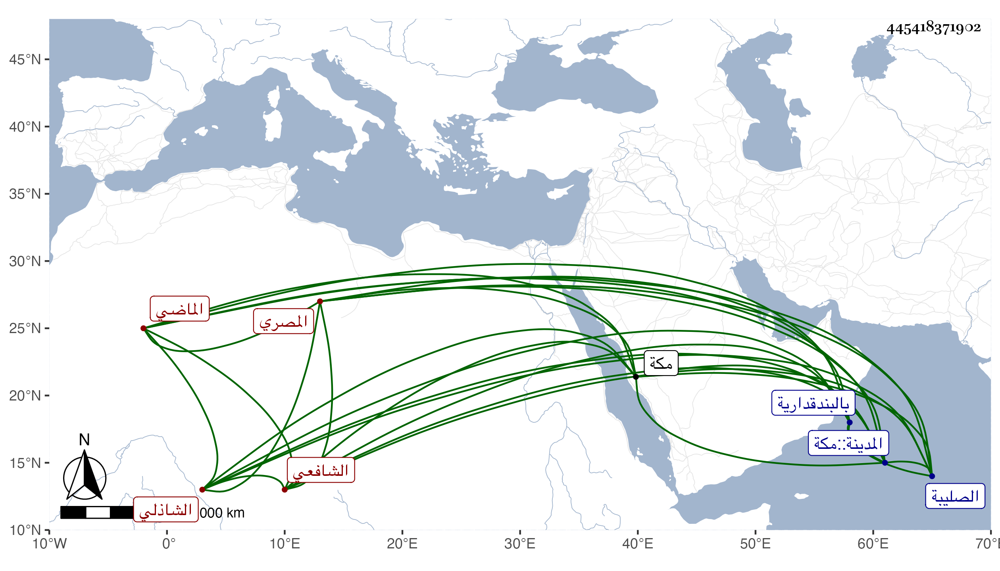

0902Sakhawi.DawLamic.ITO20230111-ara1.EIS1600.445418371902
Biography ID: 445418371902
382
محمد بن علي بن أحمد بن أبي بكر الشمس بن أبي الحسن المصري البندقداري الشافعي الشاذلي الماضي أبوه ويعرف بابن أبي الحسن . ولد في سابع عشري ذي الحجة سنة ثلاث وسبعين وسبعمائة بالبندقدارية من نواحي الصليبة ، ونشأ بها فقرأ القرآن على أبيه وحفظ العمدة والحاوي والتوضيح لابن هشام ، وعرض على شيوخ وقته وتلا للسبع جمعا بمكة على عبد الكريم اليماني وتفقه بأبيه والشمس البيجوري وعن أبيه والشطنوفي أخذ العربية وبرع فيهما وفي الأصول مع مشاركة في غيرها وكذا أخذ عن الشمس بن القطان بل سمع في سنة خمس وثمانمائة معه على شيخنا ترجمة البخاري من تأليفه ووصفه بالإمام وسمع على ابن أبي المجد الصحيح ومسند الشافعي وغيرهما وحدث سمع منه الفضلاء قرأت عليه المسند وغيره وكان خيرا ذا فضيلة ومحبة في العلم ورغبة في الحديث وأهله وحرص على التحديث بهمة عالية وعزم جيد ، وحج وجاور بالحرمين وأم بالبندقدارية محل سكنه وولي مشيخة فيها . واستمر مثابرا على الخير حتى مات في ليلة السبت سابع عشري جمادى الأولى سنة تسع وستين ودفن من الغد بالقرب من التاج ابن عطاء الله رحمه الله وإيانا .
